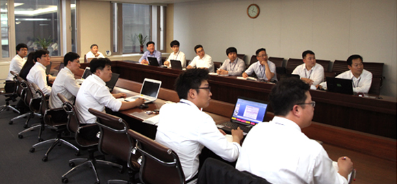

지속가능경영
- 환경 경영
- 2010년 9월 1일 환경경영 선포식을 개최하여 글로벌 기업으로 도약하는 시점에서 환경경영의 중요성을 강조하고
(주)오뚜기는 이를 계기로 ‘자연과 함께 맛으로 행복한 세상’을 만들기 위한 의미있는 걸음을 내디뎠습니다.
환경경영 선포
2010년 오뚜기는 환경경영을 전사차원에서 체계적으로 추진하기 위해 환경경영전략 수립과 함께 전 임직원이 참여하는 가운데 2010년 9월 1일 환경경영 선포식을 개최했습니다.
선포식은 각 사업장에서 개별적으로 실시되었습니다.
최고 경영자는 선포식을 통해 오뚜기가 글로벌 기업으로 도약하는 시점에서 환경경영의 중요성을 강조하고 임직원들에게 무엇보다 실천이 중요함을 강조하였습니다.
오뚜기는 이를 계기로 ‘자연과 함께 맛으로 행복한 세상’을 만들기 위한 의미있는 걸음을 내디뎠습니다.
- 
환경경영 실천방침
오뚜기의 환경 방침은 제품 전과정의 환경영향 저감, 법규 준수, 업무 프로세스와 환경의 통합, 내부 역량강화, 이해관계자 참여, 시설물 운영과 관련되어 있습니다.
오뚜기의 환경 방침은 먼지 쌓인 액자 속에 있는 단순한 구호가 아닙니다.
오뚜기가 창립 이래 48년간 성장·발전해오면서 오뚜기의 경영철학을 담고 있는 사시(社是)가 임직원들이 추구해야 할 궁극적인 목표를 제시해주었던 것처럼
환경방침은 임직원들이 환경경영을 실천하면서 어떻게 머리를 쓰고 땀 흘려야 하는지에 대한 방향을 알려줍니다.
이를 위해 2010년 9월 1일 오뚜기의 환경 방침으로서 ‘환경경영실천방침’을 공표하고 내부 포털공지사항으로 전 임직원이 공유하였습니다.
환경경영 실천 방침
- 1. 우리는 에너지 절감 및 낭비요소를 제거하고, 온실가스를 포함한 배출가스를 줄이기 위해 끊임없이 노력한다.
- 2. 우리는 제품개발로부터 사용 후 폐기까지 사전오염 예방 및 환경오염물질의 발생을 최소화하여 고객의 환경에 대한 기대에 부응한다.
- 3. 우리는 환경법규를 준수하고 법적 기준보다 엄격한 내부 기준을 만들어 이를 충실히 이행한다.
- 4. 우리는 업무시설과 업무절차를 철저히 분석하여 환경성과가 개선될 수 있게 한다.
- 5. 우리는 환경영향을 줄일 수 있는 조치들을 시행하고 공급업체 및 협력업체에도 요청한다.
- 6. 우리는 모든 시설물 및 시설물 운영에 있어 환경을 고려한다.
- 7. 우리는 환경경영활동의 정보화로 내외부 의사소통체계를 강화하고, 전략 목표와과제를 반드시 실행한다.
- 8. 우리는 환경보전에 대한 사회적 책임을 깊이 인식하고 지역사회의환경보전활동에 적극 참여한다.
- 9. 우리는 업무 및 제품, 서비스와 관련된 환경관점과 법률적 요건을 철저히 파악한다.
- 10. 우리는 환경목표를 지속적으로 달성하기 위하여 필요한 교육과 충분한 자료를 확보한다.